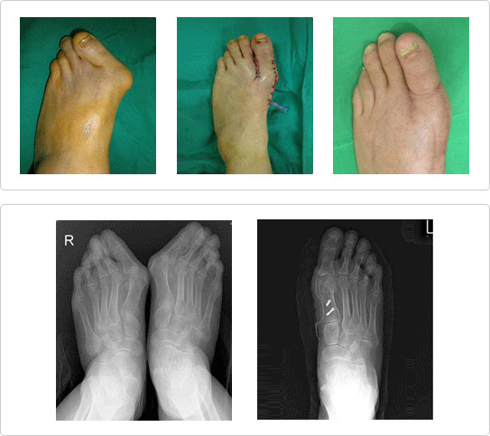

Hallux valgus
Hallux valgus refers to the abnormal drifting or inward directionality of the great toe in the direction of the second toe.
Hallux valgus is also commonly associated with bunions. Surgery may be necessary if the discomfort is severe or it is desired to correct the deformity.

Hallux valgus treatment
- The Foot Center correctsbones projecting to the exteriority and the deformity of related ligaments, muscles and jointscaused by bone distortion.
There are about 100 kinds of ways that the direction of the bones can change so that customized treatment is possible for each patient’s condition.